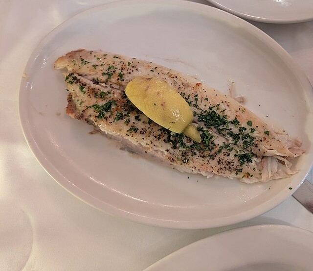

Menu
島の恵みの目録
島で獲れたもの、庭で育てたもの、手で仕込んだもの。ラ パゴッドのメニューは、佐渡の恵みとフランス仕込みの手仕事でできています。




掲載中の一部の写真はフリー素材のイメージです。実際の店内・お料理写真は貴店ご提供のものに差し替えます。
島で獲れたもの、庭で育てたもの、手で仕込んだもの。ラ パゴッドのメニューは、佐渡の恵みとフランス仕込みの手仕事でできています。

掲載中の一部の写真はフリー素材のイメージです。実際の店内・お料理写真は貴店ご提供のものに差し替えます。